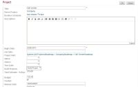

TeamCity Notifier
Introduction
Contents
Description
The VersionOne TeamCity Notifier creates a record of TeamCity builds in VersionOne, so the development teams can associate stories and defects to a particular build. This visibility is useful when identifying problem builds or generating release notes.
Once the TeamCity Notifier has been installed, team members include a VersionOne identifier, such as "S-01454" or "TK-01234", in the comments of their SCM commit. Every time a build executes the Notifier creates a BuildRun asset in VersionOne with details of the build. If the build comment contains VersionOne Story or Defect Identifiers, the Notifier will create or reuse a VersionOne change-set and relate the build with the appropriate Story or Defect.
Using this integration you can better address the following situations:
- Defects
- Which build the defect was reported against?
- Which build contained the fix for the defect?
- Which builds contain work for the defect?
- For Stories (Backlog Item)
- Which builds contain work for the story?
- Which build contained the completed story?
- For Build Runs
- Which defects were fixed?
- Which stories were completed?
- Which defects were introduced?
- When work for a story or defect was included?
- Which Change-sets were included?
- For a range of Build Runs
- Which stories were completed?
- Which defects were fixed?
- Which defects were introduced?
The following sequence diagram illustrates the VersionOne TeamCity Notifier behavior.
System Requirements
VersionOne:
- 8.1 or above, including Team Edition
Integration Server Operating System:
- Windows 2000, 2003, 2008
Continuous Integration Server:
- Tested with TeamCity Version 4.0 - 7.0

If you are using TeamCity 4.5 you need release 4.5.4 or better.
Downloads
The latest version of V1Publisher is available at V1: Integration Downloads
Installation
These instructions presume that TeamCity is already installed, configured, and working properly.
- Ensure Connectivity
Verify that you can connect to your VersionOne instance from the machine hosting TeamCity - Extract Files
Download the TeamCity integration using the link above and extract it into a folder of your choice. This can be a temporary location since we will copy some of these files during TeamCity configuration. - Configure
- Verify the installation
Once configuration is complete use the following steps to verify that the build integration is working- Navigate to your TeamCity instance
- Force a build on the project you configured
- Wait for build to complete
- Navigate to your VersionOne instance
- Login
- Select VersionOne project in 'My Projects' dropdown
- Navigate to the Reports | Reports Overview page
- Select the "Build Run Quicklist" Report
You should see an entry in the grid for the build you forced. If not, verify your configuration.
Configuration
Configure VersionOne
| If you are using Team Edition, you need to manually create the Build Project. Instructions for doing this are available on the VersionOne Community Site. |
- Log into the VersionOne application as admin
- Navigate to the Admin | Configuration | System page.
- Check the "Enable Build Integration" checkbox and click the Apply button.
- Navigate to the Admin | Projects | Build Project page
- Click Add to add a new Build Project
- Specify the following
- Name - this is how the Build Project will be known to VersionOne users
- Reference - this is how the Build Project is known to TeamCity
- Click Ok to save the new Build Project
- Navigate to the Admin | Projects | Projects page
- Click Edit on the row for the project you want associated with a Build Project
- Using the "Build Projects" dropdown add the appropriate Build Project.
 - Click Ok to accept the changes
- Logout


{kind=link}
{kind=link}
Configure TeamCity
This section describes how to configure TeamCity for use with VersionOne
- On your TeamCity server, copy the downloaded package into the "plugins" subdirectory located in your TeamCity Data directory. You can determine the Team City Data directory by viewing the Server Configuration page.
- Rename the file to TeamCityNotificator.zip
- Restart the TeamCity application server for the changes to take effect
- Open a browser and navigate to your TeamCity URL
- Login as a TeamCity Administrator
- Navigate to the "Administration" page
- Click the "Edit server configuration" link
- Locate the "VersionOne Integration Settings" and click on the "Edit settings" link
- Configure the integration setting based on the following table
Parameter Description Required Server URL The URL of the VersionOne Application. True Username Valid VersionOne Username. True Password Password for the specified Username True Reference Field The system name of an attribute to search when matching primary workitems (stories and defects) with change comments.
* See note belowTrue Comment RegEx The regular expression to use when matching primary workitems (stories and defects) with change comments.
* See note belowTrue Use fully qualified build names Determines how the integration looks for Build Projects in VersionOne.
* If not checked, the integration uses only the TeamCity Project name.
* If checked, the integration uses the TeamCity Project name and build configuration name in the format {Project} :: {Configuration}True Use Proxy Determines if the integrations connects to VersionOne through a proxy. No, unless you have a proxy Proxy URI URL to proxy server Yes, when using a proxy Proxy user Username for proxy server Yes, when using a proxy Proxy password Password for proxy user Yes, when using a proxy It is recommended that you do not change the "Reference Field" or "Comment RegEx" fields. The "Reference Field" is the system name of the attribute to search when matching the ID in change comments with workitems in VersionOne. The "Comment RegEx" is used to extract workitem identifiers from the change comments. - Click "Test Connection" to verify that you can connect to VersionOne.
- Click "Save"
{kind=link}
{kind=link}